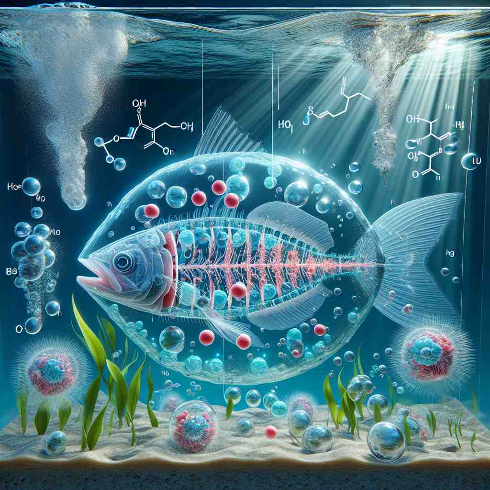

💬 The plants need fresh air to grow healthy.

💬 They love to breathe in the air while enjoying the outdoors.

💬 The underwater scene reminds us of how fresh air is important for life.
💬 The trees need fresh air to grow strong.
🔈 [eə]
🗝️ n. the invisible mixture of gases that surrounds the Earth and that we breathe
🖼️ 在一个繁忙的城市公园里，孩子们在阳光下奔跑，嬉戏。他们呼吸着清新的空气，这种无形的气体混合物是生存的基本要素，为地球上的所有生命提供了支持。
🔍 想象'air'是围绕我们的无形物质。从这个核心概念出发，我们可以理解它如何扩展到表示上空、氛围、外表、音乐，以及与空气相关的动作。通过联想空气的特性——无形、流动、包围——可以更容易记住'air'的多重含义。
💬 The plants need fresh air to grow healthy.
💬 They love to breathe in the air while enjoying the outdoors.
💬 The underwater scene reminds us of how fresh air is important for life.
💬 The trees need fresh air to grow strong.
🌳 起源于拉丁词根 "aer"，意为 "空气"。这个词本身是一个基础名词，表示我们呼吸的天然气体。
💡 可以联想成 "aer" 和 "air" 的拼写相似性，同为空气相关。记住 "air" 是大气的一部分，它支持生命，这样更容易理解与之相关的词汇。
🗝️ n. the space or sky above the ground
🖼️ 在辽阔的草原上，一位牧羊人仰望天空，看着白云在蔚蓝的空中飘动。头顶的广阔天空是一种无边无际的空间，让人感受到大自然的宏伟。
💬 The birds soared through the air.
❓ 空气充满的空间
🗝️ n. a particular atmosphere or quality
🖼️ 在一家高档餐厅中，低声的音乐、轻柔的灯光和细致的摆设共同营造出一种优雅的氛围，使人感受到了一种庄重而宁静的气质。
💬 There was an air of excitement in the room.
❓ 空气能传递某种感觉或氛围
🗝️ n. outward appearance
🖼️ 在一个时尚派对上，一位穿着精致礼服的女士昂首挺胸走进会场，她的举止和姿态都散发着一种迷人的优雅，给人一种高贵且自信的外在印象。
💬 She has an air of confidence about her.
❓ 如同空气般环绕一个人的气质
🗝️ n. a melody or tune
🖼️ 在一个舒适的咖啡馆里，钢琴师的手指在琴键上跳跃，演奏出一首悠扬的旋律。悦耳的曲调在房间中回荡，为房间内的人们带来了心灵的放松。
💬 He was humming a familiar air.
❓ 音乐像空气一样流动
🗝️ v. to broadcast
🖼️ 在一个现代化的电视演播室，主持人对着镜头开始报道当天的新闻，信号通过电波传播，使全国观众都能在家中实时接收到最新的信息。
💬 The show will air next Monday.
❓ 通过空气传播信息
🗝️ v. to expose to fresh air
🖼️ 在一个阳光明媚的早晨，一位家庭主妇将新洗的衣服挂在院子里的绳子上晾晒。清新的微风轻轻拂过，使衣物散发出风中的自然清香。
💬 We need to air out the room.
❓ 让某物接触空气